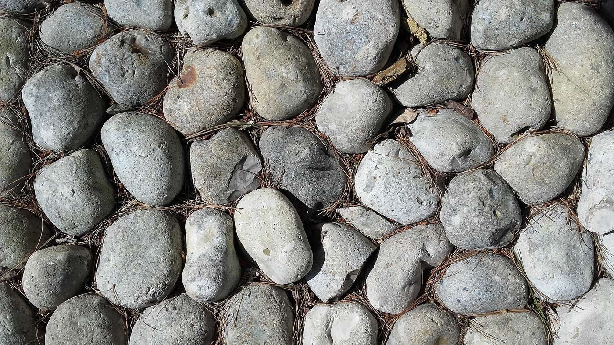

制作側の連想
手動リベッターの部位を、配置図にしてみる
手動式リベッター(ハンドルを握って使う工具)の部位を図にしたもので、制作側の連想です。お店の理念・由来とは無関係で、実際の製品の仕様を示すものでもありません。六つの部位に番号をふり、上の図と並べています。
凡例
六つの部位
- 1上レバー(可動ハンドル)握りこむと動く、上側の長い腕。先端側の部品に力を伝える。
- 2下グリップ(固定ハンドル)本体から伸びる下側の腕。上レバーと向かい合って握る。
- 3ヒンジピン(支点)二本の腕をつなぐ軸。ここを中心にレバーが開閉する。
- 4ノーズピース(先端の筒)前に突き出た細い筒。リベットの軸を通す入口になる。
- 5ジョー(つかみ金具)筒の奥にある、軸をくわえる小さな金具。
- 6リターンスプリング(戻しばね)握りを離したとき、二本の腕を開いた形に戻すばね。
写真(イメージ)
写真(イメージ)



写真はイメージです。お店のものではありません。
ご案内
お店のこと(確認できたものだけ)
| 所在地 | 〒794-1402 愛媛県今治市上浦町井口７５９０−１ |
|---|---|
| 電話 | 準備中 |
| 営業時間 | 準備中 |
| 定休日 | 準備中 |
| ご予約 | 準備中 |
| 駐車場 | 準備中 |
| SNS | Instagram @shimanamicoffee |